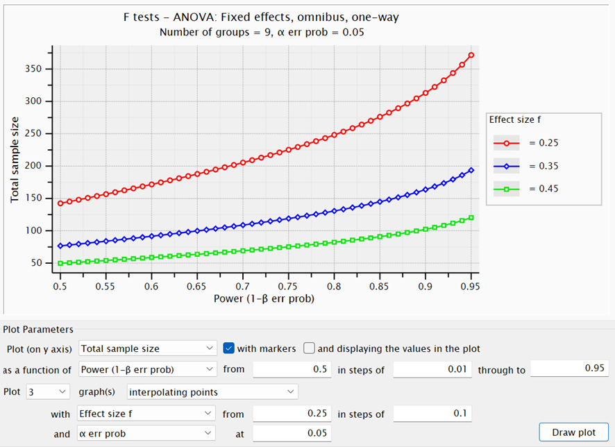
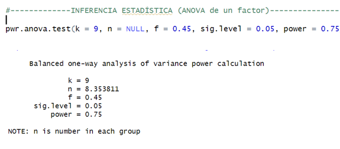
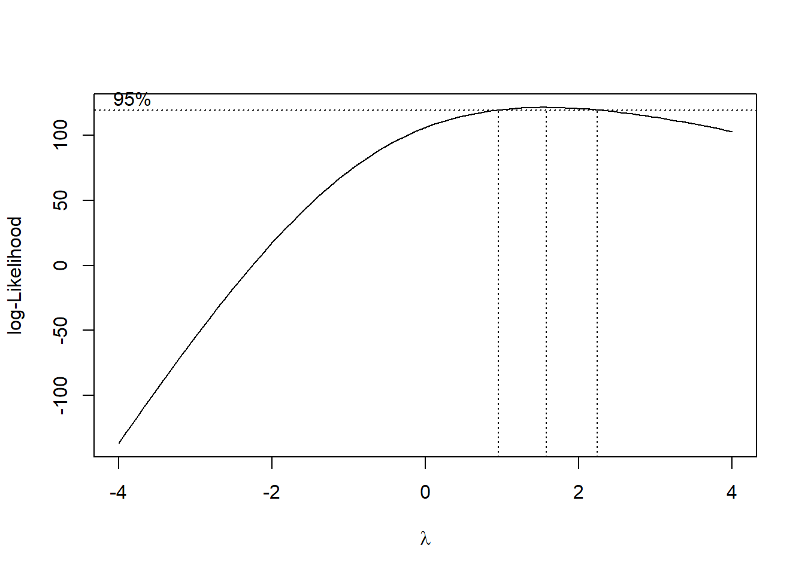
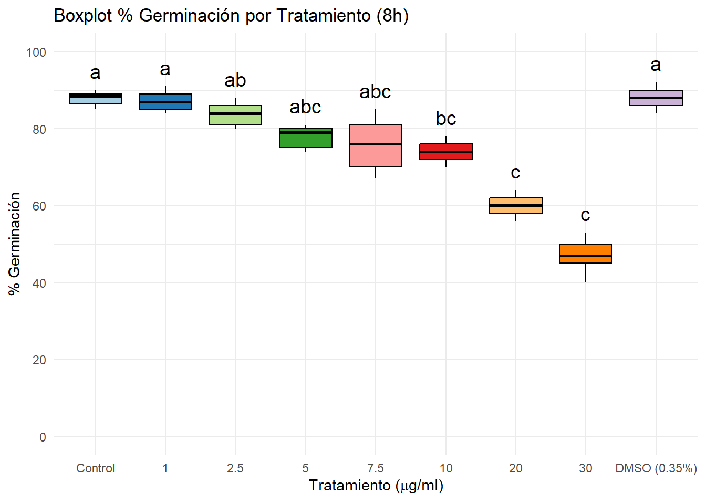
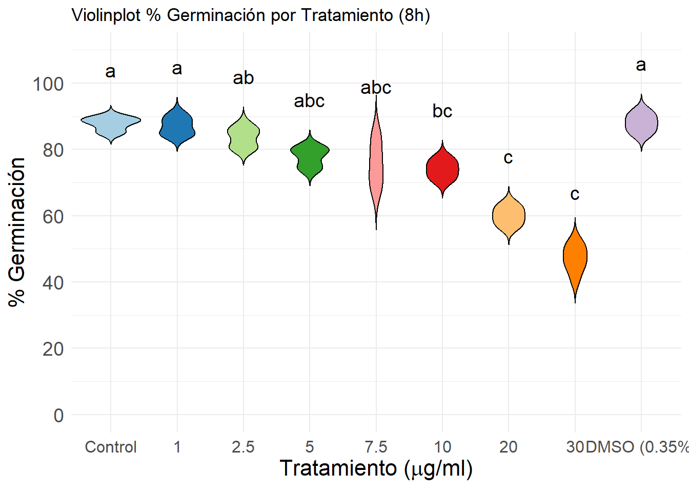
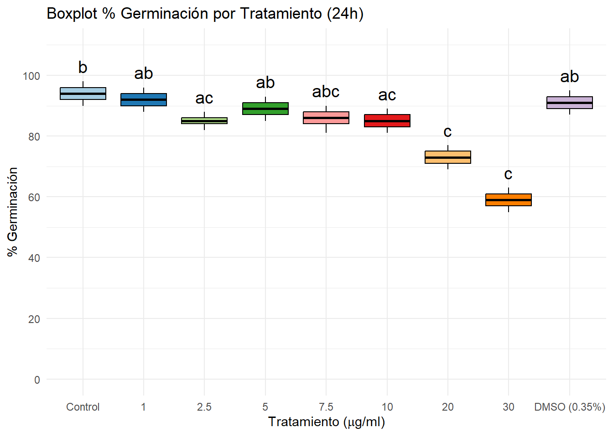
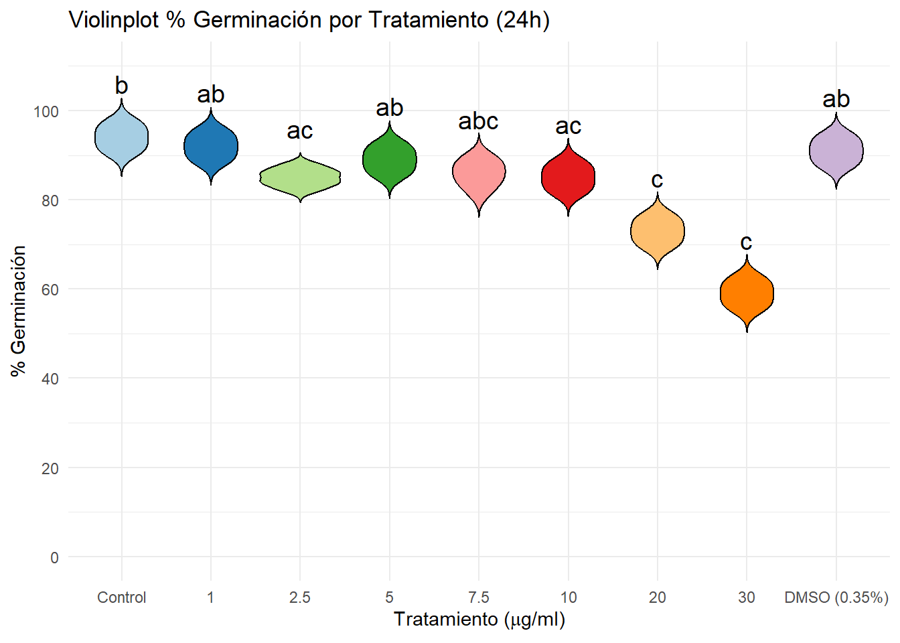

# 1. Cargamos y preparamos los datos
farmaco <- read.table("C:/Users/dvalh/Desktop/UA/MatesUA/Prácticas de empresa + privado/Actividades 1 a 3/Actividad 1/estudiofarmaco.txt", sep = "\t", header = TRUE)
farmaconuevo1 <- na.omit(farmaco)
farmaconuevo2 <- farmaconuevo1 # Partimos de todos los datos sin filtrarACTIVIDAD 1
¿Qué es un data scientist? Diferencias y similitudes entre data science y data analysis
La ciencia de datos (data science) es una ciencia interdisciplinar que se nutre y utiliza múltiples áreas de conocimiento como la estadística, la programación e incluso otras ramas de la informática en combinación con la información que recibe del entorno de interés (una consultoría, un laboratorio que trabaja con datos biológicos, una industria cárnica, etc.) para entender, procesar, analizar y extraer conclusiones sobre los datos recogidos de dicho entorno. El científico de datos (data scientist), básicamente, se encarga de manejar y crear código utilizando conocimientos de informática y matemáticas para no solo analizar esos datos, sino llegar a sus propias conclusiones y sugerir y contestar a nuevas preguntas sobre el objeto de interés.
Un analista de datos (data analyst) también se encarga de procesar y analizar información para responder a preguntas a partir de un proceso de selección y análisis de datos. Sin embargo, las diferencias son claras entre el trabajo que realiza un data analyst y el trabajo que realiza un data scientist. Es más, en muchas empresas suelen convivir ambos tipos de especialistas que tienen focalizaciones distintas. Vemos las principales diferencias:
En primer lugar, el data analyst normalmente solo responde a las preguntas que se le ofrecen en ese entorno de trabajo. Es decir, procesa y analiza los datos para obtener respuestas a las preguntas concretas que la empresa le encarga. Sin embargo, el data scientist va más allá y es capaz de entender la información de manera no tanto descriptiva sino para ser capaz de derivar nuevas preguntas a futuro.
Por otro lado, en relación a lo anterior, el data analyst se centra más en lo que respecta a análisis descriptivo, visualización de datos y la identificación de patrones o tendencias para responder a esas preguntas (por ejemplo, hacer regresiones lineales o logísticas o un ANOVA/MANOVA de forma detallada para ver patrones, tendencias o interacciones entre datos). En cambio, el data scientist, debido a su enfoque más amplio, se centra más en análisis predictivo, modelización de datos, machine learning y sobre todo, en la generación de paquetes y software para ser usado a posteriori de ser necesario, reutilizando la información y los modelos para ser usados a futuro.
Así, mientras que el data analyst no se sale tanto de su enfoque estadístico-matemático para ofrecer insights sobre los datos, el data scientist enfoca el problema desde una perspectiva más a futuro creando software que le pueda servir a la persona/empresa interesada, transformando los datos en modelos complejos para plantear otras preguntas, incluso por el propio data scientist.
¿Qué es el poder estadístico? ¿Cómo se relaciona con el efecto estadístico?
El poder estadístico o la potencia estadística de un test (suponemos no aleatorizado) mide la capacidad de un test de detectar errores de tipo II, es decir, la probabilidad de aceptar la hipótesis nula H0 (que conocemos) dado que H0 es falsa.
En otras palabras, el poder estadístico mide la capacidad de un estudio para identificar un efecto de estar este presente. Un poder estadístico bajo quiere decir que existe un mayor riesgo de no detectar efectos reales por lo anteriormente dicho, lo que puede llevar a una conclusión errónea. Por eso, en investigación y análisis de laboratorio, se suele buscar un poder estadístico mínimo de 0,80 (80%), lo que implica que hay un 80% de probabilidad de detectar un efecto si realmente existe, aunque dependiendo de la viabilidad de hacer más o menos réplicas independientes del experimento para cada grupo, podremos aceptar poderes estadísticos de 0,60-0,70 (menos de 0,50 en general no, aunque en algunos estudios no se suele hacer un análisis de poder previo al estudio y se aceptan poderes bajos), también dependerá de cuán formal queramos que sea el estudio. Aquí, por cómo es nuestro estudio (una probatina de laboratorio sencilla), hemos considerado un poder de 0,75 (cerca a 0,80) sin problemas, si bien como veremos es recomendable utilizar n > 30 ya que en tal caso en general la distribución de los datos intergrupo (las réplicas) aproxima bien a una distribución normal (podremos suponer normalidad). El efecto a priori queremos que sea alto normalmente porque no solo queremos que el fármaco tenga algún efecto en la germinación, sino que queremos que el fármaco en cuestión tenga mucho efecto en esta.
Así, lo que hemos estudiado primeramente es el tamaño mínimo de muestra necesario para detectar un efecto de interés con una probabilidad adecuada. Aquí se muestra la gráfica para varios f desde 0.25 a 0.45 y poder de 0,75 y un en un one-way ANOVA, que es lo que queremos estudiar.

Nuestra N (número total de réplicas independientes) es aproximadamente N = 81 según la gráfica en G*Power para f = 0,45 y 1-β = 0,75 (el poder). Si lo hacemos en R, nos devuelve el número de réplicas por grupo que tenemos que tomar, que da n = 8,35, que redondeado hacia arriba es n = 9, que coincide con el análisis que hace G*Power, con un efecto de f = 0,45 (muy alto, alto se considera en general más de 0,4).

Código principal con pasos
Preprocesamiento de datos
# Si X._germinados > 100, lo dividimos entre 10
farmaconuevo2$X._germinados <- ifelse(farmaconuevo2$X._germinados > 100,
farmaconuevo2$X._germinados / 10,
farmaconuevo2$X._germinados)
niveles_trt <- c("C", "1", "2.5", "5", "7.5", "10", "20", "30", "DMSO_35")
farmaconuevo2$trt <- factor(farmaconuevo2$trt, levels = niveles_trt, ordered = TRUE)
farmaconuevo2$trtf <- paste0(farmaconuevo2$trt, "_", farmaconuevo2$time, "h")
niveles_trtf <- c(
paste0(niveles_trt, "_8h"),
paste0(niveles_trt, "_24h")
)
farmaconuevo2$trtf <- factor(farmaconuevo2$trtf,
levels = niveles_trtf,
ordered = FALSE)# Filtramos los datos
subfarmaco8 = droplevels(subset(farmaconuevo2, time == 8))
subfarmaco24 = droplevels(subset(farmaconuevo2, time == 24))# Instalamos y cargamos paquetes necesarios
if (!require("pwr", quietly = TRUE)) install.packages("pwr")Warning: package 'pwr' was built under R version 4.4.3if (!require("Superpower", quietly = TRUE)) install.packages("Superpower")Warning: package 'Superpower' was built under R version 4.4.3if (!require("car", quietly = TRUE)) install.packages("car")
if (!require("DescTools", quietly = TRUE)) install.packages("DescTools")Warning: package 'DescTools' was built under R version 4.4.3
Adjuntando el paquete: 'DescTools'The following object is masked from 'package:car':
Recodeif (!require("ggplot2", quietly = TRUE)) install.packages("ggplot2")Warning: package 'ggplot2' was built under R version 4.4.3library(pwr)
library(Superpower)
library(car)
library(DescTools)
library(ggplot2)INFERENCIA ESTADÍSTICA (ANOVA de un factor)
#-------------INFERENCIA ESTADÍSTICA (ANOVA de un factor)-------------------
pwr.anova.test(k = 9, n = NULL, f = 0.4, sig.level = 0.05, power = 0.7)
Balanced one-way analysis of variance power calculation
k = 9
n = 9.468808
f = 0.4
sig.level = 0.05
power = 0.7
NOTE: n is number in each group#--Vemos cómo son los datos----------------
str(farmaconuevo2)'data.frame': 162 obs. of 5 variables:
$ trt : Ord.factor w/ 9 levels "C"<"1"<"2.5"<..: 1 1 1 1 1 1 1 1 2 2 ...
$ time : int 8 8 8 8 8 8 8 8 8 8 ...
$ replica : int 1 2 3 4 5 6 7 8 1 2 ...
$ X._germinados: num 89 85 89 85 87 90 88 89 84 90 ...
$ trtf : Factor w/ 18 levels "C_8h","1_8h",..: 1 1 1 1 1 1 1 1 2 2 ...
- attr(*, "na.action")= 'omit' Named int 9
..- attr(*, "names")= chr "9"table(farmaconuevo2$trtf)
C_8h 1_8h 2.5_8h 5_8h 7.5_8h 10_8h
8 9 10 9 9 9
20_8h 30_8h DMSO_35_8h C_24h 1_24h 2.5_24h
9 9 9 9 9 9
5_24h 7.5_24h 10_24h 20_24h 30_24h DMSO_35_24h
9 9 9 9 9 9 summary(farmaconuevo2) #AQUÍ VEO SI HAY QUE HACER CLEANING DE LOS DATOS trt time replica X._germinados trtf
2.5 :19 Min. : 8 Min. :1.000 Min. :40.00 2.5_8h : 10
1 :18 1st Qu.: 8 1st Qu.:3.000 1st Qu.:74.00 1_8h : 9
5 :18 Median :16 Median :5.000 Median :84.00 5_8h : 9
7.5 :18 Mean :16 Mean :4.963 Mean :79.69 7.5_8h : 9
10 :18 3rd Qu.:24 3rd Qu.:7.000 3rd Qu.:89.00 10_8h : 9
20 :18 Max. :24 Max. :9.000 Max. :98.00 20_8h : 9
(Other):53 (Other):107 #O HAY COSAS QUE NO ENCAJAN#-----------------------
#Boxplots (abajo)
#-----------------------
modelo_aov <- aov(X._germinados ~ trtf, data = farmaconuevo2)
summary(modelo_aov) Df Sum Sq Mean Sq F value Pr(>F)
trtf 17 25526 1501.5 154.4 <2e-16 ***
Residuals 144 1401 9.7
---
Signif. codes: 0 '***' 0.001 '**' 0.01 '*' 0.05 '.' 0.1 ' ' 1shapiro.test(resid(modelo_aov)) # Normalidad
Shapiro-Wilk normality test
data: resid(modelo_aov)
W = 0.97989, p-value = 0.01851leveneTest(X._germinados ~ trtf, data = farmaconuevo2) # Homogeneidad de varianzasLevene's Test for Homogeneity of Variance (center = median)
Df F value Pr(>F)
group 17 2.1791 0.006951 **
144
---
Signif. codes: 0 '***' 0.001 '**' 0.01 '*' 0.05 '.' 0.1 ' ' 1FALLAN TANTO LA NORMALIDAD COMO LA HOMOGENEIDAD, TRANSFORMAMOS LOS DATOS:
#----------Si ANOVA significativo--------------
TukeyHSD(modelo_aov) Tukey multiple comparisons of means
95% family-wise confidence level
Fit: aov(formula = X._germinados ~ trtf, data = farmaconuevo2)
$trtf
diff lwr upr p adj
1_8h-C_8h -0.7500000 -6.1350764 4.6350764 1.0000000
2.5_8h-C_8h -4.1500000 -9.4068419 1.1068419 0.3217595
5_8h-C_8h -9.9722222 -15.3572987 -4.5871458 0.0000001
7.5_8h-C_8h -11.9722222 -17.3572987 -6.5871458 0.0000000
10_8h-C_8h -13.7500000 -19.1350764 -8.3649236 0.0000000
20_8h-C_8h -27.7500000 -33.1350764 -22.3649236 0.0000000
30_8h-C_8h -40.6388889 -46.0239653 -35.2538124 0.0000000
DMSO_35_8h-C_8h 0.2500000 -5.1350764 5.6350764 1.0000000
C_24h-C_8h 6.2500000 0.8649236 11.6350764 0.0075359
1_24h-C_8h 4.2500000 -1.1350764 9.6350764 0.3222637
2.5_24h-C_8h -2.7500000 -8.1350764 2.6350764 0.9358163
5_24h-C_8h 1.2500000 -4.1350764 6.6350764 0.9999954
7.5_24h-C_8h -1.8611111 -7.2461876 3.5239653 0.9989346
10_24h-C_8h -2.7500000 -8.1350764 2.6350764 0.9358163
20_24h-C_8h -14.7500000 -20.1350764 -9.3649236 0.0000000
30_24h-C_8h -28.7500000 -34.1350764 -23.3649236 0.0000000
DMSO_35_24h-C_8h 3.2500000 -2.1350764 8.6350764 0.7853612
2.5_8h-1_8h -3.4000000 -8.4920095 1.6920095 0.6292851
5_8h-1_8h -9.2222222 -14.4465137 -3.9979307 0.0000006
7.5_8h-1_8h -11.2222222 -16.4465137 -5.9979307 0.0000000
10_8h-1_8h -13.0000000 -18.2242915 -7.7757085 0.0000000
20_8h-1_8h -27.0000000 -32.2242915 -21.7757085 0.0000000
30_8h-1_8h -39.8888889 -45.1131804 -34.6645974 0.0000000
DMSO_35_8h-1_8h 1.0000000 -4.2242915 6.2242915 0.9999998
C_24h-1_8h 7.0000000 1.7757085 12.2242915 0.0006333
1_24h-1_8h 5.0000000 -0.2242915 10.2242915 0.0778494
2.5_24h-1_8h -2.0000000 -7.2242915 3.2242915 0.9963867
5_24h-1_8h 2.0000000 -3.2242915 7.2242915 0.9963867
7.5_24h-1_8h -1.1111111 -6.3354026 4.1131804 0.9999988
10_24h-1_8h -2.0000000 -7.2242915 3.2242915 0.9963867
20_24h-1_8h -14.0000000 -19.2242915 -8.7757085 0.0000000
30_24h-1_8h -28.0000000 -33.2242915 -22.7757085 0.0000000
DMSO_35_24h-1_8h 4.0000000 -1.2242915 9.2242915 0.3763081
5_8h-2.5_8h -5.8222222 -10.9142317 -0.7302127 0.0093805
7.5_8h-2.5_8h -7.8222222 -12.9142317 -2.7302127 0.0000298
10_8h-2.5_8h -9.6000000 -14.6920095 -4.5079905 0.0000001
20_8h-2.5_8h -23.6000000 -28.6920095 -18.5079905 0.0000000
30_8h-2.5_8h -36.4888889 -41.5808984 -31.3968794 0.0000000
DMSO_35_8h-2.5_8h 4.4000000 -0.6920095 9.4920095 0.1825520
C_24h-2.5_8h 10.4000000 5.3079905 15.4920095 0.0000000
1_24h-2.5_8h 8.4000000 3.3079905 13.4920095 0.0000045
2.5_24h-2.5_8h 1.4000000 -3.6920095 6.4920095 0.9999479
5_24h-2.5_8h 5.4000000 0.3079905 10.4920095 0.0255534
7.5_24h-2.5_8h 2.2888889 -2.8031206 7.3808984 0.9798881
10_24h-2.5_8h 1.4000000 -3.6920095 6.4920095 0.9999479
20_24h-2.5_8h -10.6000000 -15.6920095 -5.5079905 0.0000000
30_24h-2.5_8h -24.6000000 -29.6920095 -19.5079905 0.0000000
DMSO_35_24h-2.5_8h 7.4000000 2.3079905 12.4920095 0.0001127
7.5_8h-5_8h -2.0000000 -7.2242915 3.2242915 0.9963867
10_8h-5_8h -3.7777778 -9.0020693 1.4465137 0.4829350
20_8h-5_8h -17.7777778 -23.0020693 -12.5534863 0.0000000
30_8h-5_8h -30.6666667 -35.8909582 -25.4423751 0.0000000
DMSO_35_8h-5_8h 10.2222222 4.9979307 15.4465137 0.0000000
C_24h-5_8h 16.2222222 10.9979307 21.4465137 0.0000000
1_24h-5_8h 14.2222222 8.9979307 19.4465137 0.0000000
2.5_24h-5_8h 7.2222222 1.9979307 12.4465137 0.0003358
5_24h-5_8h 11.2222222 5.9979307 16.4465137 0.0000000
7.5_24h-5_8h 8.1111111 2.8868196 13.3354026 0.0000228
10_24h-5_8h 7.2222222 1.9979307 12.4465137 0.0003358
20_24h-5_8h -4.7777778 -10.0020693 0.4465137 0.1171696
30_24h-5_8h -18.7777778 -24.0020693 -13.5534863 0.0000000
DMSO_35_24h-5_8h 13.2222222 7.9979307 18.4465137 0.0000000
10_8h-7.5_8h -1.7777778 -7.0020693 3.4465137 0.9991213
20_8h-7.5_8h -15.7777778 -21.0020693 -10.5534863 0.0000000
30_8h-7.5_8h -28.6666667 -33.8909582 -23.4423751 0.0000000
DMSO_35_8h-7.5_8h 12.2222222 6.9979307 17.4465137 0.0000000
C_24h-7.5_8h 18.2222222 12.9979307 23.4465137 0.0000000
1_24h-7.5_8h 16.2222222 10.9979307 21.4465137 0.0000000
2.5_24h-7.5_8h 9.2222222 3.9979307 14.4465137 0.0000006
5_24h-7.5_8h 13.2222222 7.9979307 18.4465137 0.0000000
7.5_24h-7.5_8h 10.1111111 4.8868196 15.3354026 0.0000000
10_24h-7.5_8h 9.2222222 3.9979307 14.4465137 0.0000006
20_24h-7.5_8h -2.7777778 -8.0020693 2.4465137 0.9111315
30_24h-7.5_8h -16.7777778 -22.0020693 -11.5534863 0.0000000
DMSO_35_24h-7.5_8h 15.2222222 9.9979307 20.4465137 0.0000000
20_8h-10_8h -14.0000000 -19.2242915 -8.7757085 0.0000000
30_8h-10_8h -26.8888889 -32.1131804 -21.6645974 0.0000000
DMSO_35_8h-10_8h 14.0000000 8.7757085 19.2242915 0.0000000
C_24h-10_8h 20.0000000 14.7757085 25.2242915 0.0000000
1_24h-10_8h 18.0000000 12.7757085 23.2242915 0.0000000
2.5_24h-10_8h 11.0000000 5.7757085 16.2242915 0.0000000
5_24h-10_8h 15.0000000 9.7757085 20.2242915 0.0000000
7.5_24h-10_8h 11.8888889 6.6645974 17.1131804 0.0000000
10_24h-10_8h 11.0000000 5.7757085 16.2242915 0.0000000
20_24h-10_8h -1.0000000 -6.2242915 4.2242915 0.9999998
30_24h-10_8h -15.0000000 -20.2242915 -9.7757085 0.0000000
DMSO_35_24h-10_8h 17.0000000 11.7757085 22.2242915 0.0000000
30_8h-20_8h -12.8888889 -18.1131804 -7.6645974 0.0000000
DMSO_35_8h-20_8h 28.0000000 22.7757085 33.2242915 0.0000000
C_24h-20_8h 34.0000000 28.7757085 39.2242915 0.0000000
1_24h-20_8h 32.0000000 26.7757085 37.2242915 0.0000000
2.5_24h-20_8h 25.0000000 19.7757085 30.2242915 0.0000000
5_24h-20_8h 29.0000000 23.7757085 34.2242915 0.0000000
7.5_24h-20_8h 25.8888889 20.6645974 31.1131804 0.0000000
10_24h-20_8h 25.0000000 19.7757085 30.2242915 0.0000000
20_24h-20_8h 13.0000000 7.7757085 18.2242915 0.0000000
30_24h-20_8h -1.0000000 -6.2242915 4.2242915 0.9999998
DMSO_35_24h-20_8h 31.0000000 25.7757085 36.2242915 0.0000000
DMSO_35_8h-30_8h 40.8888889 35.6645974 46.1131804 0.0000000
C_24h-30_8h 46.8888889 41.6645974 52.1131804 0.0000000
1_24h-30_8h 44.8888889 39.6645974 50.1131804 0.0000000
2.5_24h-30_8h 37.8888889 32.6645974 43.1131804 0.0000000
5_24h-30_8h 41.8888889 36.6645974 47.1131804 0.0000000
7.5_24h-30_8h 38.7777778 33.5534863 44.0020693 0.0000000
10_24h-30_8h 37.8888889 32.6645974 43.1131804 0.0000000
20_24h-30_8h 25.8888889 20.6645974 31.1131804 0.0000000
30_24h-30_8h 11.8888889 6.6645974 17.1131804 0.0000000
DMSO_35_24h-30_8h 43.8888889 38.6645974 49.1131804 0.0000000
C_24h-DMSO_35_8h 6.0000000 0.7757085 11.2242915 0.0087970
1_24h-DMSO_35_8h 4.0000000 -1.2242915 9.2242915 0.3763081
2.5_24h-DMSO_35_8h -3.0000000 -8.2242915 2.2242915 0.8441982
5_24h-DMSO_35_8h 1.0000000 -4.2242915 6.2242915 0.9999998
7.5_24h-DMSO_35_8h -2.1111111 -7.3354026 3.1131804 0.9933683
10_24h-DMSO_35_8h -3.0000000 -8.2242915 2.2242915 0.8441982
20_24h-DMSO_35_8h -15.0000000 -20.2242915 -9.7757085 0.0000000
30_24h-DMSO_35_8h -29.0000000 -34.2242915 -23.7757085 0.0000000
DMSO_35_24h-DMSO_35_8h 3.0000000 -2.2242915 8.2242915 0.8441982
1_24h-C_24h -2.0000000 -7.2242915 3.2242915 0.9963867
2.5_24h-C_24h -9.0000000 -14.2242915 -3.7757085 0.0000013
5_24h-C_24h -5.0000000 -10.2242915 0.2242915 0.0778494
7.5_24h-C_24h -8.1111111 -13.3354026 -2.8868196 0.0000228
10_24h-C_24h -9.0000000 -14.2242915 -3.7757085 0.0000013
20_24h-C_24h -21.0000000 -26.2242915 -15.7757085 0.0000000
30_24h-C_24h -35.0000000 -40.2242915 -29.7757085 0.0000000
DMSO_35_24h-C_24h -3.0000000 -8.2242915 2.2242915 0.8441982
2.5_24h-1_24h -7.0000000 -12.2242915 -1.7757085 0.0006333
5_24h-1_24h -3.0000000 -8.2242915 2.2242915 0.8441982
7.5_24h-1_24h -6.1111111 -11.3354026 -0.8868196 0.0066995
10_24h-1_24h -7.0000000 -12.2242915 -1.7757085 0.0006333
20_24h-1_24h -19.0000000 -24.2242915 -13.7757085 0.0000000
30_24h-1_24h -33.0000000 -38.2242915 -27.7757085 0.0000000
DMSO_35_24h-1_24h -1.0000000 -6.2242915 4.2242915 0.9999998
5_24h-2.5_24h 4.0000000 -1.2242915 9.2242915 0.3763081
7.5_24h-2.5_24h 0.8888889 -4.3354026 6.1131804 1.0000000
10_24h-2.5_24h 0.0000000 -5.2242915 5.2242915 1.0000000
20_24h-2.5_24h -12.0000000 -17.2242915 -6.7757085 0.0000000
30_24h-2.5_24h -26.0000000 -31.2242915 -20.7757085 0.0000000
DMSO_35_24h-2.5_24h 6.0000000 0.7757085 11.2242915 0.0087970
7.5_24h-5_24h -3.1111111 -8.3354026 2.1131804 0.8024108
10_24h-5_24h -4.0000000 -9.2242915 1.2242915 0.3763081
20_24h-5_24h -16.0000000 -21.2242915 -10.7757085 0.0000000
30_24h-5_24h -30.0000000 -35.2242915 -24.7757085 0.0000000
DMSO_35_24h-5_24h 2.0000000 -3.2242915 7.2242915 0.9963867
10_24h-7.5_24h -0.8888889 -6.1131804 4.3354026 1.0000000
20_24h-7.5_24h -12.8888889 -18.1131804 -7.6645974 0.0000000
30_24h-7.5_24h -26.8888889 -32.1131804 -21.6645974 0.0000000
DMSO_35_24h-7.5_24h 5.1111111 -0.1131804 10.3354026 0.0627459
20_24h-10_24h -12.0000000 -17.2242915 -6.7757085 0.0000000
30_24h-10_24h -26.0000000 -31.2242915 -20.7757085 0.0000000
DMSO_35_24h-10_24h 6.0000000 0.7757085 11.2242915 0.0087970
30_24h-20_24h -14.0000000 -19.2242915 -8.7757085 0.0000000
DMSO_35_24h-20_24h 18.0000000 12.7757085 23.2242915 0.0000000
DMSO_35_24h-30_24h 32.0000000 26.7757085 37.2242915 0.0000000EtaSq(modelo_aov, type = 1) #TAMAÑO EFECTO eta^2 eta.sq eta.sq.part
trtf 0.9479774 0.9479774#--------------------- TRANSFORMACIONES -------------------------
#PRIMERO PRUEBO CON UNA RAÍZ, POR EJEMPLO
farmaconuevo2$sqrt_germinados <- sqrt(farmaconuevo2$X._germinados) # +1 para evitar log(0)
modelo_aov_sqrt <- aov(sqrt_germinados ~ trtf, data = farmaconuevo2)
summary(modelo_aov_sqrt) Df Sum Sq Mean Sq F value Pr(>F)
trtf 17 90.62 5.331 162 <2e-16 ***
Residuals 144 4.74 0.033
---
Signif. codes: 0 '***' 0.001 '**' 0.01 '*' 0.05 '.' 0.1 ' ' 1shapiro.test(resid(modelo_aov_sqrt))
Shapiro-Wilk normality test
data: resid(modelo_aov_sqrt)
W = 0.98393, p-value = 0.05761leveneTest(sqrt_germinados ~ trtf, data = farmaconuevo2)Levene's Test for Homogeneity of Variance (center = median)
Df F value Pr(>F)
group 17 2.7084 0.0006791 ***
144
---
Signif. codes: 0 '***' 0.001 '**' 0.01 '*' 0.05 '.' 0.1 ' ' 1#PRUEBO CON UNA TRANSFORMACIÓN BOX-COX QUE OPTIMIZA LOS DATOS PARA
#QUE LA DISTRIBUCIÓN DE LOS DATOS SEA MÁS NORMAL Y LOS RESIDUOS
#MÁS HOMOGÉNEOS
library(MASS)Warning: package 'MASS' was built under R version 4.4.3boxcox_result <- boxcox(farmaconuevo2$X._germinados ~ farmaconuevo2$trtf, lambda = seq(-4, 4, 0.1))
# El gráfico te indicará el lambda óptimo
lambda_optimo <- boxcox_result$x[which.max(boxcox_result$y)]
print(lambda_optimo)[1] 1.575758if(abs(lambda_optimo) < 0.01) {
farmaconuevo2$Y_trans <- log(farmaconuevo2$X._germinados + 1) # +1 para evitar log(0)
} else {
farmaconuevo2$Y_trans <- ((farmaconuevo2$X._germinados + 1)^lambda_optimo - 1)/lambda_optimo
}
modelo_aov_box <- aov(Y_trans ~ trtf, data = farmaconuevo2)
summary(modelo_aov_box) Df Sum Sq Mean Sq F value Pr(>F)
trtf 17 3562369 209551 142.5 <2e-16 ***
Residuals 144 211732 1470
---
Signif. codes: 0 '***' 0.001 '**' 0.01 '*' 0.05 '.' 0.1 ' ' 1shapiro.test(resid(modelo_aov_box))
Shapiro-Wilk normality test
data: resid(modelo_aov_box)
W = 0.98317, p-value = 0.04645leveneTest(Y_trans ~ trtf, data = farmaconuevo2)Levene's Test for Homogeneity of Variance (center = median)
Df F value Pr(>F)
group 17 1.9952 0.01505 *
144
---
Signif. codes: 0 '***' 0.001 '**' 0.01 '*' 0.05 '.' 0.1 ' ' 1Como no hay normalidad ni homogeneidad, no hacemos nada y usamos #un test no paramétrico equivalente al ANOVA (Kruskal-Wallis + Dunn):
#Vería TukeyHSD
tukeybox = TukeyHSD(modelo_aov_box)#-------------INFERENCIA ESTADÍSTICA (ANOVA de dos factores)-------------------
# Convertimos f a f2 (para modelos generales)
f <- 0.4
f2 <- f^2 # f^2 = 0.16
# Grados de libertad para el numerador:
# k = número de grupos (combinaciones A x B) - 1
u <- 9 - 1 # = 8
# Potencia para detectar el efecto global (puede ser efecto principal o interacción)
pwr_result <- pwr.f2.test(u = u, f2 = f2, sig.level = 0.05, power = 0.8)
pwr_result
Multiple regression power calculation
u = 8
v = 92.89476
f2 = 0.16
sig.level = 0.05
power = 0.8INFERENCIA ESTADÍSTICA (ANOVA de dos factores)
#-------------INFERENCIA ESTADÍSTICA (ANOVA de dos factores)-------------------
# Convertimos f a f2 (para modelos generales)
f <- 0.4
f2 <- f^2 # f^2 = 0.16
# Grados de libertad para el numerador:
# k = número de grupos (combinaciones A x B) - 1
u <- 9 - 1 # = 8
# Potencia para detectar el efecto global (puede ser efecto principal o interacción)
pwr_result <- pwr.f2.test(u = u, f2 = f2, sig.level = 0.05, power = 0.8)
pwr_result
Multiple regression power calculation
u = 8
v = 92.89476
f2 = 0.16
sig.level = 0.05
power = 0.8#-----------------------
#Boxplots (abajo)
#-----------------------
modelo_aov <- aov(X._germinados ~ trtf, data = farmaconuevo2)
summary(modelo_aov) Df Sum Sq Mean Sq F value Pr(>F)
trtf 17 25526 1501.5 154.4 <2e-16 ***
Residuals 144 1401 9.7
---
Signif. codes: 0 '***' 0.001 '**' 0.01 '*' 0.05 '.' 0.1 ' ' 1shapiro.test(resid(modelo_aov)) # Normalidad
Shapiro-Wilk normality test
data: resid(modelo_aov)
W = 0.97989, p-value = 0.01851leveneTest(X._germinados ~ trtf, data = farmaconuevo2) # Homogeneidad de varianzasLevene's Test for Homogeneity of Variance (center = median)
Df F value Pr(>F)
group 17 2.1791 0.006951 **
144
---
Signif. codes: 0 '***' 0.001 '**' 0.01 '*' 0.05 '.' 0.1 ' ' 1FALLAN TANTO LA NORMALIDAD COMO LA HOMOGENEIDAD, TRANSFORMAMOS LOS DATOS:
#----------Si ANOVA significativo--------------
TukeyHSD(modelo_aov) Tukey multiple comparisons of means
95% family-wise confidence level
Fit: aov(formula = X._germinados ~ trtf, data = farmaconuevo2)
$trtf
diff lwr upr p adj
1_8h-C_8h -0.7500000 -6.1350764 4.6350764 1.0000000
2.5_8h-C_8h -4.1500000 -9.4068419 1.1068419 0.3217595
5_8h-C_8h -9.9722222 -15.3572987 -4.5871458 0.0000001
7.5_8h-C_8h -11.9722222 -17.3572987 -6.5871458 0.0000000
10_8h-C_8h -13.7500000 -19.1350764 -8.3649236 0.0000000
20_8h-C_8h -27.7500000 -33.1350764 -22.3649236 0.0000000
30_8h-C_8h -40.6388889 -46.0239653 -35.2538124 0.0000000
DMSO_35_8h-C_8h 0.2500000 -5.1350764 5.6350764 1.0000000
C_24h-C_8h 6.2500000 0.8649236 11.6350764 0.0075359
1_24h-C_8h 4.2500000 -1.1350764 9.6350764 0.3222637
2.5_24h-C_8h -2.7500000 -8.1350764 2.6350764 0.9358163
5_24h-C_8h 1.2500000 -4.1350764 6.6350764 0.9999954
7.5_24h-C_8h -1.8611111 -7.2461876 3.5239653 0.9989346
10_24h-C_8h -2.7500000 -8.1350764 2.6350764 0.9358163
20_24h-C_8h -14.7500000 -20.1350764 -9.3649236 0.0000000
30_24h-C_8h -28.7500000 -34.1350764 -23.3649236 0.0000000
DMSO_35_24h-C_8h 3.2500000 -2.1350764 8.6350764 0.7853612
2.5_8h-1_8h -3.4000000 -8.4920095 1.6920095 0.6292851
5_8h-1_8h -9.2222222 -14.4465137 -3.9979307 0.0000006
7.5_8h-1_8h -11.2222222 -16.4465137 -5.9979307 0.0000000
10_8h-1_8h -13.0000000 -18.2242915 -7.7757085 0.0000000
20_8h-1_8h -27.0000000 -32.2242915 -21.7757085 0.0000000
30_8h-1_8h -39.8888889 -45.1131804 -34.6645974 0.0000000
DMSO_35_8h-1_8h 1.0000000 -4.2242915 6.2242915 0.9999998
C_24h-1_8h 7.0000000 1.7757085 12.2242915 0.0006333
1_24h-1_8h 5.0000000 -0.2242915 10.2242915 0.0778494
2.5_24h-1_8h -2.0000000 -7.2242915 3.2242915 0.9963867
5_24h-1_8h 2.0000000 -3.2242915 7.2242915 0.9963867
7.5_24h-1_8h -1.1111111 -6.3354026 4.1131804 0.9999988
10_24h-1_8h -2.0000000 -7.2242915 3.2242915 0.9963867
20_24h-1_8h -14.0000000 -19.2242915 -8.7757085 0.0000000
30_24h-1_8h -28.0000000 -33.2242915 -22.7757085 0.0000000
DMSO_35_24h-1_8h 4.0000000 -1.2242915 9.2242915 0.3763081
5_8h-2.5_8h -5.8222222 -10.9142317 -0.7302127 0.0093805
7.5_8h-2.5_8h -7.8222222 -12.9142317 -2.7302127 0.0000298
10_8h-2.5_8h -9.6000000 -14.6920095 -4.5079905 0.0000001
20_8h-2.5_8h -23.6000000 -28.6920095 -18.5079905 0.0000000
30_8h-2.5_8h -36.4888889 -41.5808984 -31.3968794 0.0000000
DMSO_35_8h-2.5_8h 4.4000000 -0.6920095 9.4920095 0.1825520
C_24h-2.5_8h 10.4000000 5.3079905 15.4920095 0.0000000
1_24h-2.5_8h 8.4000000 3.3079905 13.4920095 0.0000045
2.5_24h-2.5_8h 1.4000000 -3.6920095 6.4920095 0.9999479
5_24h-2.5_8h 5.4000000 0.3079905 10.4920095 0.0255534
7.5_24h-2.5_8h 2.2888889 -2.8031206 7.3808984 0.9798881
10_24h-2.5_8h 1.4000000 -3.6920095 6.4920095 0.9999479
20_24h-2.5_8h -10.6000000 -15.6920095 -5.5079905 0.0000000
30_24h-2.5_8h -24.6000000 -29.6920095 -19.5079905 0.0000000
DMSO_35_24h-2.5_8h 7.4000000 2.3079905 12.4920095 0.0001127
7.5_8h-5_8h -2.0000000 -7.2242915 3.2242915 0.9963867
10_8h-5_8h -3.7777778 -9.0020693 1.4465137 0.4829350
20_8h-5_8h -17.7777778 -23.0020693 -12.5534863 0.0000000
30_8h-5_8h -30.6666667 -35.8909582 -25.4423751 0.0000000
DMSO_35_8h-5_8h 10.2222222 4.9979307 15.4465137 0.0000000
C_24h-5_8h 16.2222222 10.9979307 21.4465137 0.0000000
1_24h-5_8h 14.2222222 8.9979307 19.4465137 0.0000000
2.5_24h-5_8h 7.2222222 1.9979307 12.4465137 0.0003358
5_24h-5_8h 11.2222222 5.9979307 16.4465137 0.0000000
7.5_24h-5_8h 8.1111111 2.8868196 13.3354026 0.0000228
10_24h-5_8h 7.2222222 1.9979307 12.4465137 0.0003358
20_24h-5_8h -4.7777778 -10.0020693 0.4465137 0.1171696
30_24h-5_8h -18.7777778 -24.0020693 -13.5534863 0.0000000
DMSO_35_24h-5_8h 13.2222222 7.9979307 18.4465137 0.0000000
10_8h-7.5_8h -1.7777778 -7.0020693 3.4465137 0.9991213
20_8h-7.5_8h -15.7777778 -21.0020693 -10.5534863 0.0000000
30_8h-7.5_8h -28.6666667 -33.8909582 -23.4423751 0.0000000
DMSO_35_8h-7.5_8h 12.2222222 6.9979307 17.4465137 0.0000000
C_24h-7.5_8h 18.2222222 12.9979307 23.4465137 0.0000000
1_24h-7.5_8h 16.2222222 10.9979307 21.4465137 0.0000000
2.5_24h-7.5_8h 9.2222222 3.9979307 14.4465137 0.0000006
5_24h-7.5_8h 13.2222222 7.9979307 18.4465137 0.0000000
7.5_24h-7.5_8h 10.1111111 4.8868196 15.3354026 0.0000000
10_24h-7.5_8h 9.2222222 3.9979307 14.4465137 0.0000006
20_24h-7.5_8h -2.7777778 -8.0020693 2.4465137 0.9111315
30_24h-7.5_8h -16.7777778 -22.0020693 -11.5534863 0.0000000
DMSO_35_24h-7.5_8h 15.2222222 9.9979307 20.4465137 0.0000000
20_8h-10_8h -14.0000000 -19.2242915 -8.7757085 0.0000000
30_8h-10_8h -26.8888889 -32.1131804 -21.6645974 0.0000000
DMSO_35_8h-10_8h 14.0000000 8.7757085 19.2242915 0.0000000
C_24h-10_8h 20.0000000 14.7757085 25.2242915 0.0000000
1_24h-10_8h 18.0000000 12.7757085 23.2242915 0.0000000
2.5_24h-10_8h 11.0000000 5.7757085 16.2242915 0.0000000
5_24h-10_8h 15.0000000 9.7757085 20.2242915 0.0000000
7.5_24h-10_8h 11.8888889 6.6645974 17.1131804 0.0000000
10_24h-10_8h 11.0000000 5.7757085 16.2242915 0.0000000
20_24h-10_8h -1.0000000 -6.2242915 4.2242915 0.9999998
30_24h-10_8h -15.0000000 -20.2242915 -9.7757085 0.0000000
DMSO_35_24h-10_8h 17.0000000 11.7757085 22.2242915 0.0000000
30_8h-20_8h -12.8888889 -18.1131804 -7.6645974 0.0000000
DMSO_35_8h-20_8h 28.0000000 22.7757085 33.2242915 0.0000000
C_24h-20_8h 34.0000000 28.7757085 39.2242915 0.0000000
1_24h-20_8h 32.0000000 26.7757085 37.2242915 0.0000000
2.5_24h-20_8h 25.0000000 19.7757085 30.2242915 0.0000000
5_24h-20_8h 29.0000000 23.7757085 34.2242915 0.0000000
7.5_24h-20_8h 25.8888889 20.6645974 31.1131804 0.0000000
10_24h-20_8h 25.0000000 19.7757085 30.2242915 0.0000000
20_24h-20_8h 13.0000000 7.7757085 18.2242915 0.0000000
30_24h-20_8h -1.0000000 -6.2242915 4.2242915 0.9999998
DMSO_35_24h-20_8h 31.0000000 25.7757085 36.2242915 0.0000000
DMSO_35_8h-30_8h 40.8888889 35.6645974 46.1131804 0.0000000
C_24h-30_8h 46.8888889 41.6645974 52.1131804 0.0000000
1_24h-30_8h 44.8888889 39.6645974 50.1131804 0.0000000
2.5_24h-30_8h 37.8888889 32.6645974 43.1131804 0.0000000
5_24h-30_8h 41.8888889 36.6645974 47.1131804 0.0000000
7.5_24h-30_8h 38.7777778 33.5534863 44.0020693 0.0000000
10_24h-30_8h 37.8888889 32.6645974 43.1131804 0.0000000
20_24h-30_8h 25.8888889 20.6645974 31.1131804 0.0000000
30_24h-30_8h 11.8888889 6.6645974 17.1131804 0.0000000
DMSO_35_24h-30_8h 43.8888889 38.6645974 49.1131804 0.0000000
C_24h-DMSO_35_8h 6.0000000 0.7757085 11.2242915 0.0087970
1_24h-DMSO_35_8h 4.0000000 -1.2242915 9.2242915 0.3763081
2.5_24h-DMSO_35_8h -3.0000000 -8.2242915 2.2242915 0.8441982
5_24h-DMSO_35_8h 1.0000000 -4.2242915 6.2242915 0.9999998
7.5_24h-DMSO_35_8h -2.1111111 -7.3354026 3.1131804 0.9933683
10_24h-DMSO_35_8h -3.0000000 -8.2242915 2.2242915 0.8441982
20_24h-DMSO_35_8h -15.0000000 -20.2242915 -9.7757085 0.0000000
30_24h-DMSO_35_8h -29.0000000 -34.2242915 -23.7757085 0.0000000
DMSO_35_24h-DMSO_35_8h 3.0000000 -2.2242915 8.2242915 0.8441982
1_24h-C_24h -2.0000000 -7.2242915 3.2242915 0.9963867
2.5_24h-C_24h -9.0000000 -14.2242915 -3.7757085 0.0000013
5_24h-C_24h -5.0000000 -10.2242915 0.2242915 0.0778494
7.5_24h-C_24h -8.1111111 -13.3354026 -2.8868196 0.0000228
10_24h-C_24h -9.0000000 -14.2242915 -3.7757085 0.0000013
20_24h-C_24h -21.0000000 -26.2242915 -15.7757085 0.0000000
30_24h-C_24h -35.0000000 -40.2242915 -29.7757085 0.0000000
DMSO_35_24h-C_24h -3.0000000 -8.2242915 2.2242915 0.8441982
2.5_24h-1_24h -7.0000000 -12.2242915 -1.7757085 0.0006333
5_24h-1_24h -3.0000000 -8.2242915 2.2242915 0.8441982
7.5_24h-1_24h -6.1111111 -11.3354026 -0.8868196 0.0066995
10_24h-1_24h -7.0000000 -12.2242915 -1.7757085 0.0006333
20_24h-1_24h -19.0000000 -24.2242915 -13.7757085 0.0000000
30_24h-1_24h -33.0000000 -38.2242915 -27.7757085 0.0000000
DMSO_35_24h-1_24h -1.0000000 -6.2242915 4.2242915 0.9999998
5_24h-2.5_24h 4.0000000 -1.2242915 9.2242915 0.3763081
7.5_24h-2.5_24h 0.8888889 -4.3354026 6.1131804 1.0000000
10_24h-2.5_24h 0.0000000 -5.2242915 5.2242915 1.0000000
20_24h-2.5_24h -12.0000000 -17.2242915 -6.7757085 0.0000000
30_24h-2.5_24h -26.0000000 -31.2242915 -20.7757085 0.0000000
DMSO_35_24h-2.5_24h 6.0000000 0.7757085 11.2242915 0.0087970
7.5_24h-5_24h -3.1111111 -8.3354026 2.1131804 0.8024108
10_24h-5_24h -4.0000000 -9.2242915 1.2242915 0.3763081
20_24h-5_24h -16.0000000 -21.2242915 -10.7757085 0.0000000
30_24h-5_24h -30.0000000 -35.2242915 -24.7757085 0.0000000
DMSO_35_24h-5_24h 2.0000000 -3.2242915 7.2242915 0.9963867
10_24h-7.5_24h -0.8888889 -6.1131804 4.3354026 1.0000000
20_24h-7.5_24h -12.8888889 -18.1131804 -7.6645974 0.0000000
30_24h-7.5_24h -26.8888889 -32.1131804 -21.6645974 0.0000000
DMSO_35_24h-7.5_24h 5.1111111 -0.1131804 10.3354026 0.0627459
20_24h-10_24h -12.0000000 -17.2242915 -6.7757085 0.0000000
30_24h-10_24h -26.0000000 -31.2242915 -20.7757085 0.0000000
DMSO_35_24h-10_24h 6.0000000 0.7757085 11.2242915 0.0087970
30_24h-20_24h -14.0000000 -19.2242915 -8.7757085 0.0000000
DMSO_35_24h-20_24h 18.0000000 12.7757085 23.2242915 0.0000000
DMSO_35_24h-30_24h 32.0000000 26.7757085 37.2242915 0.0000000EtaSq(modelo_aov, type = 1) #TAMAÑO EFECTO eta^2 eta.sq eta.sq.part
trtf 0.9479774 0.9479774#--------------------- TRANSFORMACIONES -------------------------
#PRIMERO PRUEBO CON UNA RAÍZ, POR EJEMPLO
farmaconuevo2$sqrt_germinados <- sqrt(farmaconuevo2$X._germinados) # +1 para evitar log(0)
modelo_aov_sqrt <- aov(sqrt_germinados ~ trtf, data = farmaconuevo2)
summary(modelo_aov_sqrt) Df Sum Sq Mean Sq F value Pr(>F)
trtf 17 90.62 5.331 162 <2e-16 ***
Residuals 144 4.74 0.033
---
Signif. codes: 0 '***' 0.001 '**' 0.01 '*' 0.05 '.' 0.1 ' ' 1shapiro.test(resid(modelo_aov_sqrt))
Shapiro-Wilk normality test
data: resid(modelo_aov_sqrt)
W = 0.98393, p-value = 0.05761leveneTest(sqrt_germinados ~ trtf, data = farmaconuevo2)Levene's Test for Homogeneity of Variance (center = median)
Df F value Pr(>F)
group 17 2.7084 0.0006791 ***
144
---
Signif. codes: 0 '***' 0.001 '**' 0.01 '*' 0.05 '.' 0.1 ' ' 1#PRUEBO CON UNA TRANSFORMACIÓN BOX-COX QUE OPTIMIZA LOS DATOS PARA
#QUE LA DISTRIBUCIÓN DE LOS DATOS SEA MÁS NORMAL Y LOS RESIDUOS
#MÁS HOMOGÉNEOS
library(MASS)
boxcox_result <- boxcox(farmaconuevo2$X._germinados ~ farmaconuevo2$trtf, lambda = seq(-4, 4, 0.1))
# El gráfico te indicará el lambda óptimo
lambda_optimo <- boxcox_result$x[which.max(boxcox_result$y)]
print(lambda_optimo)[1] 1.575758if(abs(lambda_optimo) < 0.01) {
farmaconuevo2$Y_trans <- log(farmaconuevo2$X._germinados + 1) # +1 para evitar log(0)
} else {
farmaconuevo2$Y_trans <- ((farmaconuevo2$X._germinados + 1)^lambda_optimo - 1)/lambda_optimo
}
modelo_aov_box <- aov(Y_trans ~ trtf, data = farmaconuevo2)
summary(modelo_aov_box) Df Sum Sq Mean Sq F value Pr(>F)
trtf 17 3562369 209551 142.5 <2e-16 ***
Residuals 144 211732 1470
---
Signif. codes: 0 '***' 0.001 '**' 0.01 '*' 0.05 '.' 0.1 ' ' 1shapiro.test(resid(modelo_aov_box))
Shapiro-Wilk normality test
data: resid(modelo_aov_box)
W = 0.98317, p-value = 0.04645leveneTest(Y_trans ~ trtf, data = farmaconuevo2)Levene's Test for Homogeneity of Variance (center = median)
Df F value Pr(>F)
group 17 1.9952 0.01505 *
144
---
Signif. codes: 0 '***' 0.001 '**' 0.01 '*' 0.05 '.' 0.1 ' ' 1Como no hay normalidad ni homogeneidad, no hacemos nada y usamos un test no paramétrico equivalente al ANOVA (Kruskal-Wallis + Dunn).
#Vería TukeyHSD
tukeybox = TukeyHSD(modelo_aov_box)Tests no paramétricos y boxplot
Hacemos los gráficos:
GRÁFICO DE 8 H
#-------------------------------- TESTS NO PARAMÉTRICOS Y BOXPLOT --------------------------------------
#---------------8 H-------------------------
modelo_kruskal = kruskal.test(X._germinados ~ trtf, data = subfarmaco8)
modelo_kruskal
Kruskal-Wallis rank sum test
data: X._germinados by trtf
Kruskal-Wallis chi-squared = 70.158, df = 8, p-value = 4.571e-12if(!require("FSA", quietly = TRUE)){install.packages("FSA")}Warning: package 'FSA' was built under R version 4.4.3Registered S3 methods overwritten by 'FSA':
method from
confint.boot car
hist.boot car ## FSA v0.10.0. See citation('FSA') if used in publication.
## Run fishR() for related website and fishR('IFAR') for related book.
Adjuntando el paquete: 'FSA'The following object is masked from 'package:car':
bootCaseif(!require("rcompanion", quietly = TRUE)){install.packages("rcompanion")}Warning: package 'rcompanion' was built under R version 4.4.3if (!require("multcompView", quietly = TRUE)) install.packages("multcompView")Warning: package 'multcompView' was built under R version 4.4.3library(FSA)
library(rcompanion)
# COMPRUEBO OTRA VEZ SI trtf es factor (debe ser factor, no ordered factor)
class(farmaconuevo2$trtf)[1] "factor"# COMPRUEBO OTRA VEZ SI trtf es factor (debe ser factor, no ordered factor)
class(farmaconuevo2$trtf)[1] "factor"# Test de Dunn con corrección de Bonferroni (puedes usar "holm" o "BH" también)
dunn_result <- dunnTest(X._germinados ~ trtf,
data = subfarmaco8,
method = "bonferroni")
print(dunn_result)Dunn (1964) Kruskal-Wallis multiple comparison p-values adjusted with the Bonferroni method. Comparison Z P.unadj P.adj
1 1_8h - 10_8h 3.20885462 1.332649e-03 4.797535e-02
2 1_8h - 2.5_8h 1.05659537 2.906963e-01 1.000000e+00
3 10_8h - 2.5_8h -2.23562000 2.537667e-02 9.135602e-01
4 1_8h - 20_8h 4.52247948 6.111941e-06 2.200299e-04
5 10_8h - 20_8h 1.31362486 1.889725e-01 1.000000e+00
6 2.5_8h - 20_8h 3.58337067 3.391887e-04 1.221079e-02
7 1_8h - 30_8h 5.33472080 9.569168e-08 3.444901e-06
8 10_8h - 30_8h 2.12586618 3.351440e-02 1.000000e+00
9 2.5_8h - 30_8h 4.41671268 1.002133e-05 3.607679e-04
10 20_8h - 30_8h 0.81224132 4.166532e-01 1.000000e+00
11 1_8h - 5_8h 2.49689000 1.252878e-02 4.510361e-01
12 10_8h - 5_8h -0.71196462 4.764867e-01 1.000000e+00
13 2.5_8h - 5_8h 1.50515972 1.322830e-01 1.000000e+00
14 20_8h - 5_8h -2.02558948 4.280687e-02 1.000000e+00
15 30_8h - 5_8h -2.83783080 4.542125e-03 1.635165e-01
16 1_8h - 7.5_8h 2.71749875 6.577740e-03 2.367987e-01
17 10_8h - 7.5_8h -0.49135586 6.231748e-01 1.000000e+00
18 2.5_8h - 7.5_8h 1.73149952 8.336271e-02 1.000000e+00
19 20_8h - 7.5_8h -1.80498072 7.107770e-02 1.000000e+00
20 30_8h - 7.5_8h -2.61722205 8.864865e-03 3.191352e-01
21 5_8h - 7.5_8h 0.22060875 8.253971e-01 1.000000e+00
22 1_8h - C_8h -0.32407298 7.458828e-01 1.000000e+00
23 10_8h - C_8h -3.43711922 5.879368e-04 2.116572e-02
24 2.5_8h - C_8h -1.35544335 1.752763e-01 1.000000e+00
25 20_8h - C_8h -4.71152252 2.458729e-06 8.851425e-05
26 30_8h - C_8h -5.49951235 3.808430e-08 1.371035e-06
27 5_8h - C_8h -2.74641208 6.025103e-03 2.169037e-01
28 7.5_8h - C_8h -2.96043401 3.072059e-03 1.105941e-01
29 1_8h - DMSO_35_8h -0.35598231 7.218538e-01 1.000000e+00
30 10_8h - DMSO_35_8h -3.56483693 3.640825e-04 1.310697e-02
31 2.5_8h - DMSO_35_8h -1.42182551 1.550769e-01 1.000000e+00
32 20_8h - DMSO_35_8h -4.87846178 1.069164e-06 3.848989e-05
33 30_8h - DMSO_35_8h -5.69070311 1.265173e-08 4.554624e-07
34 5_8h - DMSO_35_8h -2.85287231 4.332603e-03 1.559737e-01
35 7.5_8h - DMSO_35_8h -3.07348106 2.115771e-03 7.616776e-02
36 C_8h - DMSO_35_8h -0.02128059 9.830218e-01 1.000000e+00comparaciones <- dunn_result$res
#LETRAS
niveles_8h <- c("C_8h", "1_8h", "2.5_8h", "5_8h", "7.5_8h", "10_8h", "20_8h", "30_8h", "DMSO_35_8h")
library(multcompView)
# Formatear las comparaciones para multcompView
# multcompView necesita vector named con p-values y nombres del tipo "A-B"
# Convertir "A_8h - B_8h" a "A_8h-B_8h" para multcompView
names_pvals <- gsub(" ", "", gsub(" - ", "-", comparaciones$Comparison))
pvals <- comparaciones$P.adj
names(pvals) <- names_pvals
# Ahora generar el agrupamiento en letras
letters <- multcompLetters(pvals, threshold = 0.05)$Letters
# Ordenar letras según niveles_8h
letters_df <- data.frame(
trtf = niveles_8h,
Letters1 = letters[niveles_8h]
)
print(letters_df) trtf Letters1
C_8h C_8h a
1_8h 1_8h a
2.5_8h 2.5_8h ab
5_8h 5_8h abc
7.5_8h 7.5_8h abc
10_8h 10_8h bc
20_8h 20_8h c
30_8h 30_8h c
DMSO_35_8h DMSO_35_8h a#GRÁFICOS
library(ggplot2)
#Gráfico
# Calcular las posiciones para las letras (por ejemplo, máximo + un poco)
library(dplyr)Warning: package 'dplyr' was built under R version 4.4.3
Adjuntando el paquete: 'dplyr'The following object is masked from 'package:MASS':
selectThe following object is masked from 'package:car':
recodeThe following objects are masked from 'package:stats':
filter, lagThe following objects are masked from 'package:base':
intersect, setdiff, setequal, unionpos_letras <- subfarmaco8 %>%
group_by(trtf) %>%
summarise(ypos = max(X._germinados, na.rm = TRUE) + 5)
# Añadimos las letras al dataframe de posiciones
pos_letras <- left_join(pos_letras, letters_df, by = "trtf")# El gráfico con letras:
ggplot(subfarmaco8, aes(x = trtf, y = X._germinados, fill = trtf)) +
geom_boxplot(color = "black") +
scale_y_continuous(limits = c(0, 100), breaks=seq(0,100,20)) +
scale_x_discrete(labels = c(
"Control", "1", "2.5", "5", "7.5", "10", "20", "30",
expression("DMSO (0.35%)")
)) +
scale_fill_manual(values = c(
"#A6CEE3", "#1F78B4", "#B2DF8A", "#33A02C",
"#FB9A99", "#E31A1C", "#FDBF6F", "#FF7F00", "#CAB2D6"
)) +
labs(
title = "Boxplot % Germinación por Tratamiento (8h)",
x = expression("Tratamiento (" * mu * "g/ml)"),
y = "% Germinación"
) +
geom_text(data = pos_letras, aes(x = trtf, y = ypos, label = Letters1), size = 5) +
theme_minimal() +
theme(legend.position = "none")
ggplot(subfarmaco8, aes(x = trtf, y = X._germinados, fill = trtf)) +
geom_violin(trim = FALSE, color = "black") + # Violinplot con borde negro
scale_y_continuous(limits = c(0, 110), breaks=seq(0,100,20)) +
scale_x_discrete(labels = c(
"Control", "1", "2.5", "5", "7.5", "10", "20", "30",
expression("DMSO (0.35%)")
)) +
scale_fill_manual(values = c(
"#A6CEE3", "#1F78B4", "#B2DF8A", "#33A02C",
"#FB9A99", "#E31A1C", "#FDBF6F", "#FF7F00", "#CAB2D6"
)) +
labs(
title = "Violinplot % Germinación por Tratamiento (8h)",
x = expression("Tratamiento (" * mu * "g/ml)"),
y = "% Germinación"
) +
geom_text(data = pos_letras, aes(x = trtf, y = ypos+9, label = Letters1), size = 5) +
theme_minimal() +
theme(legend.position = "none",
axis.title.y = element_text(size = 16),
axis.title.x = element_text(size = 16),
axis.text.y = element_text(size = 14),
axis.text.x = element_text(size = 12))
GRÁFICO 24 H
#---------------24 H-------------------------
modelo_kruskal2 = kruskal.test(X._germinados ~ trtf, data = subfarmaco24)
modelo_kruskal2
Kruskal-Wallis rank sum test
data: X._germinados by trtf
Kruskal-Wallis chi-squared = 67.015, df = 8, p-value = 1.925e-11if(!require("FSA", quietly = TRUE)){install.packages("FSA")}
if(!require("rcompanion", quietly = TRUE)){install.packages("rcompanion")}
if (!require("multcompView", quietly = TRUE)) install.packages("multcompView")
library(FSA)
library(rcompanion)
# COMPRUEBO OTRA VEZ SI trtf es factor (debe ser factor, no ordered factor)
class(farmaconuevo2$trtf)[1] "factor"# Test de Dunn con corrección de Bonferroni (puedes usar "holm" o "BH" también)
dunn_result2 <- dunnTest(X._germinados ~ trtf,
data = subfarmaco24,
method = "bonferroni")
print(dunn_result2)Dunn (1964) Kruskal-Wallis multiple comparison p-values adjusted with the Bonferroni method. Comparison Z P.unadj P.adj
1 1_24h - 10_24h 2.80804958 4.984255e-03 1.794332e-01
2 1_24h - 2.5_24h 2.88827957 3.873554e-03 1.394480e-01
3 10_24h - 2.5_24h 0.08022999 9.360543e-01 1.000000e+00
4 1_24h - 20_24h 4.54803744 5.414850e-06 1.949346e-04
5 10_24h - 20_24h 1.73998786 8.186115e-02 1.000000e+00
6 2.5_24h - 20_24h 1.65975788 9.696317e-02 1.000000e+00
7 1_24h - 30_24h 5.36036607 8.305348e-08 2.989925e-06
8 10_24h - 30_24h 2.55231649 1.070093e-02 3.852333e-01
9 2.5_24h - 30_24h 2.47208650 1.343270e-02 4.835772e-01
10 20_24h - 30_24h 0.81232863 4.166031e-01 1.000000e+00
11 1_24h - 5_24h 1.19342107 2.327045e-01 1.000000e+00
12 10_24h - 5_24h -1.61462851 1.063912e-01 1.000000e+00
13 2.5_24h - 5_24h -1.69485850 9.010227e-02 1.000000e+00
14 20_24h - 5_24h -3.35461637 7.947512e-04 2.861104e-02
15 30_24h - 5_24h -4.16694500 3.087089e-05 1.111352e-03
16 1_24h - 7.5_24h 2.45202901 1.420532e-02 5.113916e-01
17 10_24h - 7.5_24h -0.35602057 7.218252e-01 1.000000e+00
18 2.5_24h - 7.5_24h -0.43625056 6.626549e-01 1.000000e+00
19 20_24h - 7.5_24h -2.09600844 3.608144e-02 1.000000e+00
20 30_24h - 7.5_24h -2.90833706 3.633565e-03 1.308083e-01
21 5_24h - 7.5_24h 1.25860794 2.081720e-01 1.000000e+00
22 1_24h - C_24h -0.62679678 5.307925e-01 1.000000e+00
23 10_24h - C_24h -3.43484636 5.928899e-04 2.134404e-02
24 2.5_24h - C_24h -3.51507635 4.396276e-04 1.582659e-02
25 20_24h - C_24h -5.17483422 2.281134e-07 8.212083e-06
26 30_24h - C_24h -5.98716285 2.135330e-09 7.687186e-08
27 5_24h - C_24h -1.82021785 6.872584e-02 1.000000e+00
28 7.5_24h - C_24h -3.07882579 2.078182e-03 7.481454e-02
29 1_24h - DMSO_35_24h 0.37607807 7.068589e-01 1.000000e+00
30 10_24h - DMSO_35_24h -2.43197151 1.501689e-02 5.406080e-01
31 2.5_24h - DMSO_35_24h -2.51220150 1.199806e-02 4.319300e-01
32 20_24h - DMSO_35_24h -4.17195938 3.019915e-05 1.087169e-03
33 30_24h - DMSO_35_24h -4.98428800 6.219039e-07 2.238854e-05
34 5_24h - DMSO_35_24h -0.81734300 4.137324e-01 1.000000e+00
35 7.5_24h - DMSO_35_24h -2.07595094 3.789849e-02 1.000000e+00
36 C_24h - DMSO_35_24h 1.00287485 3.159212e-01 1.000000e+00comparaciones2 <- dunn_result2$res
#LETRAS
niveles_24h <- c("C_24h", "1_24h", "2.5_24h", "5_24h", "7.5_24h", "10_24h", "20_24h", "30_24h", "DMSO_35_24h")
library(multcompView)
# Formatear las comparaciones para multcompView
# multcompView necesita vector named con p-values y nombres del tipo "A-B"
# Convertir "A_8h - B_8h" a "A_8h-B_8h" para multcompView
names_pvals2 <- gsub(" ", "", gsub(" - ", "-", comparaciones2$Comparison))
pvals2 <- comparaciones2$P.adj
names(pvals2) <- names_pvals2
# Ahora generar el agrupamiento en letras
letters2 <- multcompLetters(pvals2, threshold = 0.05)$Letters
# Ordenar letras según niveles_8h
letters_df2 <- data.frame(
trtf = niveles_24h,
Letters2 = letters2[niveles_24h]
)
print(letters_df2) trtf Letters2
C_24h C_24h b
1_24h 1_24h ab
2.5_24h 2.5_24h ac
5_24h 5_24h ab
7.5_24h 7.5_24h abc
10_24h 10_24h ac
20_24h 20_24h c
30_24h 30_24h c
DMSO_35_24h DMSO_35_24h ablibrary(dplyr)
pos_letras2 <- subfarmaco24 %>%
group_by(trtf) %>%
summarise(ypos = max(X._germinados, na.rm = TRUE) + 5)
# Añadimos las letras al dataframe de posiciones
pos_letras2 <- left_join(pos_letras2, letters_df2, by = "trtf")
# El gráfico con letras:
ggplot(subfarmaco24, aes(x = trtf, y = X._germinados, fill = trtf)) +
geom_boxplot(color = "black") +
scale_y_continuous(limits = c(0, 110), breaks = seq(0,100,20)) +
scale_x_discrete(labels = c(
"Control", "1", "2.5", "5", "7.5", "10", "20", "30",
expression("DMSO (0.35%)")
)) +
scale_fill_manual(values = c(
"#A6CEE3", "#1F78B4", "#B2DF8A", "#33A02C",
"#FB9A99", "#E31A1C", "#FDBF6F", "#FF7F00", "#CAB2D6"
)) +
labs(
title = "Boxplot % Germinación por Tratamiento (24h)",
x = expression("Tratamiento (" * mu * "g/ml)"),
y = "% Germinación"
) +
geom_text(data = pos_letras2, aes(x = trtf, y = ypos, label = Letters2), size = 5) +
theme_minimal() +
theme(legend.position = "none")
ggplot(subfarmaco24, aes(x = trtf, y = X._germinados, fill = trtf)) +
geom_violin(trim = FALSE, color = "black") + # Violinplot con borde negro
scale_y_continuous(limits = c(0, 110), breaks = seq(0,100,20)) +
scale_x_discrete(labels = c(
"Control", "1", "2.5", "5", "7.5", "10", "20", "30",
expression("DMSO (0.35%)")
)) +
scale_fill_manual(values = c(
"#A6CEE3", "#1F78B4", "#B2DF8A", "#33A02C",
"#FB9A99", "#E31A1C", "#FDBF6F", "#FF7F00", "#CAB2D6"
)) +
labs(
title = "Violinplot % Germinación por Tratamiento (24h)",
x = expression("Tratamiento (" * mu * "g/ml)"),
y = "% Germinación"
) +
geom_text(data = pos_letras2, aes(x = trtf, y = ypos+3, label = Letters2), size = 5) +
theme_minimal() +
theme(legend.position = "none")
Conclusiones de la actividad
Para 8 h, observamos que con respecto al control, vemos una diferencia de medias (la media de las réplicas por grupo) en el % de germinación estadísticamente significativa a partir de 10 µg/ml de fármaco+DMSO. Sin embargo, el mayor efecto se alcanza con concentraciones de 20 y 30 µg/ml, pero puesto que no hay diferencia estadísticamente significativa de medias entre 20 y 30 µg/ml, recomendaría utilizar el fármaco+DMSO con una dosis de 20 µg/ml. Para 24 h, la conclusión es idéntica, salvo que para 2.5 µg/ml la diferencia sí es estadísticamente significativa con el control, aunque no lo es con respecto a 1 µg/ml y 5 µg/ml, de manera que tampoco nos interesa porque el efecto es relativamente pequeño. Notamos también que en 24 h el % de germinación es en general mayor (lo cual tiene bastante sentido ya que dejamos más tiempo para que el hongo crezca).
Asimismo, notamos que la diferencia de medias en el % de germinación se debe fundamentalmente a la concentración de fármaco en µg/ml y no al DMSO. Esto es porque la diferencia de medias entre el control y la mezcla con DMSO puro 0.35% (sin fármaco) no es estadísticamente significativa, como se observa en el boxplot.